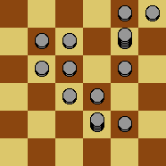
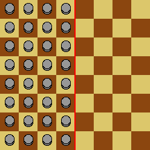
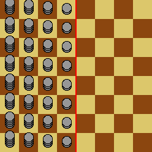

Project Euler 664
Project Euler 664
题目
An infinite game
Peter is playing a solitaire game on an infinite checkerboard, each square of which can hold an unlimited number of tokens.
Each move of the game consists of the following steps:
- Choose one token \(T\) to move. This may be any token on the board, as long as not all of its four adjacent squares are empty.
- Select and discard one token \(D\) from a square adjacent to that of \(T\).
- Move \(T\) to any one of its four adjacent squares (even if that square is already occupied).

The board is marked with a line called the dividing line. Initially, every square to the left of the dividing line contains a token, and every square to the right of the dividing line is empty:

Peter’s goal is to get a token as far as possible to the right in a finite number of moves. However, he quickly finds out that, even with his infinite supply of tokens, he cannot move a token more than four squares beyond the dividing line.
Peter then considers starting configurations with larger supplies of tokens: each square in the \(d\)th column to the left of the dividing line starts with \(d^n\) tokens instead of 1. This is illustrated below for \(n=1\):

Let \(F(n)\) be the maximum number of squares Peter can move a token beyond the dividing line. For example, \(F(0)=4\).
You are also given that \(F(1)=6, F(2)=9, F(3)=13, F(11)=58\) and \(F(123)=1173\).
Find \(F(1234567)\).
解决方案
这类题的典型做法是给每个格子赋一个正权重（代价），并证明每步操作都不会增加总代价\(W\)。这里 \(W\) 定义为：对所有格子 \(s\)，用该格子的权重 \(w(s)\) 乘以该格中的代币数量\(N(s)\)，再把所有格子的结果求和。那么有\(\displaystyle W=\sum_{s} w(s)\cdot N(s).\)这样一来：若某个目标位置所需的最小总代价已经超过初始的 \(W\)，那么它不可能到达。
本题的局部变换是：从格 \(A\) 把一个代币移到相邻格 \(C\)；同时在相邻格 \(B\) 丢弃一个代币。若一步前后总代价不增，需要\(w(C)-w(A)-w(B)\le 0 \Longleftrightarrow w(C)\le w(A)+w(B)\)对所有可能的相邻三元组 \((A,B,C)\) 成立（其中 \(B,C\) 都与 \(A\) 相邻；允许 \(B=C\)，那时不等式显然成立）。
令黄金比例\(\varphi=\dfrac{1+\sqrt5}{2}, \phi=\dfrac{1}{\varphi}=\dfrac{\sqrt5-1}{2}.\)它满足\(\varphi^2=\varphi+1\Longleftrightarrow1+\dfrac{1}{\varphi}=\varphi\Longleftrightarrow\phi+\phi^2=1.\)
把最终想推进到的那枚代币的行平移到 \(y=0\)（棋盘与初始配置在竖直方向平移不变，故不失一般性）。定义权重\(w(x,y)=\varphi^{x-4}\cdot \varphi^{-|y|}=\varphi^{x-4-|y|}.\)这样向右走一步（\(x\mapsto x+1\)）权重乘 \(\varphi\)；远离 \(y=0\) 一步（\(|y|\mapsto |y|+1\)）权重除以 \(\varphi\)。
我们接下来证明引理：对任意一步操作（从 \(A\) 到 \(C\)，并在相邻 \(B\) 丢弃一个代币），都有\(w(C)\le w(A)+w(B),\)因此 \(W\) 单调不增。
证明： 固定格 \(A=(x,y)\)。它的四个相邻格中，权重最小的相邻格至少是 \(w(A)/\varphi\)：若往左 \(x-1\) 或远离 \(y=0\) 方向走一步，则指数 \(x-4-|y|\) 减 \(1\)，权重变为 \(w(A)/\varphi\)；其余相邻格权重更大。因此对任意被丢弃的相邻格 \(B\)，都有\(w(B)\ge \dfrac{w(A)}{\varphi}.\)
而目的格 \(C\) 是 \(A\) 的某个相邻格，能让权重最大的情况是向右一步或向 \(y=0\) 方向一步，此时\(w(C)\le \varphi w(A).\)于是 \(w(A)+w(B)\ge w(A)+\dfrac{w(A)}{\varphi}= w(A)\left(1+\dfrac1\varphi\right)= w(A)\varphi\ge w(C).\)证明完成。
如果某一时刻存在代币位于 \((t,0)\)（即超出分界线 \(t\) 格），则总代价必满足\(W \ge w(t,0)=\varphi^{t-4}.\)而 \(W\) 从初始到任何时刻都不增，所以必须有\(\varphi^{t-4}\le W_0,\)其中 \(W_0\) 是初始配置的总代价。于是得到上界\(t \le 4+\log_\varphi W_0.\)
接下来说明这个上界在严格不等式情形下是紧的。把一次操作仅看作代币计数的变化：若一步中从 \(A\) 移动一个代币到相邻 \(C\)，并在相邻 \(B\) 丢弃一个代币，则计数满足\(N(A)\leftarrow N(A)-1, N(B)\leftarrow N(B)-1, N(C)\leftarrow N(C)+1.\)把这一步倒放，得到反向变换\(N(C)\leftarrow N(C)-1, N(A)\leftarrow N(A)+1, N(B)\leftarrow N(B)+1,\)它对应于把 \(C\) 上的一个代币分裂成 \(A\) 与 \(B\) 上各一个代币。
注意到对于同一行（固定 \(y\)），若取\(C=(x,y), A=(x-1,y), B=(x-2,y),\)则由权重定义 \(w(x,y)=\varphi^{x-4-|y|}\) 有\(w(C)=\varphi^{x-4-|y|}, w(A)=\varphi^{x-5-|y|}, w(B)=\varphi^{x-6-|y|}.\)利用 \(\varphi^2=\varphi+1\)，可得\(w(A)+w(B)=\varphi^{x-6-|y|}(\varphi+1)=\varphi^{x-4-|y|}=w(C).\)因此在这种三元组选择下，反向分裂满足\(W\)保持不变。
从终态仅在 \((t,0)\) 有一个代币出发，反复做上述反向分裂并总是选取满足 \(w(C)=w(A)+w(B)\) 的三元组，就会得到一族配置 \(S_m\)（分裂 \(m\) 次后），它们都满足\(W(S_m)=w(t,0)=\varphi^{t-4}.\)
同时，随着 \(m\) 增大，代币会不断向左扩散到更靠左的列。进一步地，对任意 \(\varepsilon>0\)，可以在某个足够大的 \(m\) 上对 \(S_m\) 做一次有限截断（只保留有限多个最“靠近核心”的代币，其余全部丢弃）得到一个有限配置 \(S_m'\)，使得\(W(S_m')>\varphi^{t-4}-\varepsilon,\)并且由于 \(S_m'\) 是从终态通过一系列反向变换得到的，故把这些变换按相反顺序执行，就能在有限步内把 \(S_m'\) 推回到 \((t,0)\)。
这说明：只要初始代价严格满足\(W_0>\varphi^{t-4},\)就可以取足够小的 \(\varepsilon\) 并选择相应的 \(S_m'\)，使得 \(W(S_m')\le W_0\)。由于初始配置在分界线左侧每个格子都有正数量代币，且 \(S_m'\) 只涉及有限多个格子与有限个代币数，通过适当增加分裂深度把需求“推到更靠左的列”（那里每格初始代币数 \(d^n\) 更大），可以保证 \(S_m'\) 所需代币数逐格不超过初始供给，从而 \((t,0)\) 在有限步内可达。
这里还差一个细节：当 \(\log_\varphi W_0\) 恰为整数时，等号对应的是把所有不等式都走到完全”的极端情形；在 Conway soldiers（本题 \(n=0\)）里正好出现这种临界，最终会差 \(1\)。这里用一个严格向下取整来统一表述：
定义\(\lfloor x\rfloor_\ast=\begin{cases}x-1,& x\in\mathbb Z,\\\lfloor x\rfloor,& \text{otherwise}.\end{cases}\)则\(F(n)=4+\left\lfloor \log_\varphi W_0\right\rfloor_\ast.\)
初始时，列 \(x=1-d\)（分界线左第 \(d\) 列，\(d\ge1\)）每个格有 \(d^n\) 个代币。该列任意行 \(y\) 的权重是\(w(1-d,y)=\varphi^{1-d-4-|y|}=\varphi^{-d-3-|y|}.\)该列对总代价的贡献为\(\displaystyle\sum_{y=-\infty}^{\infty} d^n\varphi^{-d-3-|y|}= d^n\varphi^{-d-3}\sum_{y=-\infty}^{\infty}\varphi^{-|y|}.\)
而\(\displaystyle\sum_{y=-\infty}^{\infty}\varphi^{-|y|}=1+2\sum_{k\ge1}\varphi^{-k}=1+\frac{2/\varphi}{1-1/\varphi}=1+\frac{2}{\varphi-1}.\)利用 \(\varphi-1=\dfrac1\varphi\)，得 \(\dfrac{2}{\varphi-1}=2\varphi\)，所以\(\displaystyle\sum_{y=-\infty}^{\infty}\varphi^{-|y|}=1+2\varphi=\varphi^3.\)因此该列贡献化简为\(d^n\varphi^{-d-3}\cdot\varphi^3 = d^n\varphi^{-d}.\)对所有 \(d\ge1\) 求和，得到一维表达：\(\displaystyle W_0=\sum_{d=1}^{\infty} d^n\varphi^{-d}.\)
综上，最终通式为
\[ F(n)=4+\left\lfloor \log_\varphi\left(\sum_{d=1}^{\infty} d^n\varphi^{-d}\right)\right\rfloor_\ast. \]
直接算 \(\sum d^n\varphi^{-d}\) 会溢出。改为计算对数：令\(a_d = \log\bigl(d^n\varphi^{-d}\bigr)=n\log d - d\log\varphi,\)那么\(\displaystyle\log W_0 = \log\sum_{d\ge1} e^{a_d}\)可用 log-sum-exp 方法稳定累加。
关键是：\(a_d\) 是严格凹函数（连续化后的\(a(x)\)），那么有\(a'(x)=\dfrac{n}{x}-\log\varphi, a''(x)=-\dfrac{n}{x^2}<0,\)峰值在\(x_\ast=\dfrac{n}{\log\varphi}.\)
在峰值附近做二阶展开，\(a(x_\ast+u)\approx a(x_\ast)-\dfrac{(\log\varphi)^2}{2n}u^2.\)所以当 \(|u|=A\sqrt n\) 时，项会按 \(\exp(-cA^2)\) 级别衰减，其中 \(c=\dfrac{(\log\varphi)^2}{2}\)。取足够大的常数 \(A\) 后，窗口外总贡献对最终取整不会产生影响。因此只需在区间\(d\in \bigl[\lfloor x_\ast-A\sqrt n\rfloor,\lfloor x_\ast+A\sqrt n\rfloor\bigr]\)做 log-sum-exp，就能得到足够精确的 \(\log W_0\)，进而得到 \(F(n)\)。
代码
1 | from math import sqrt, log, log1p, inf, floor, exp |